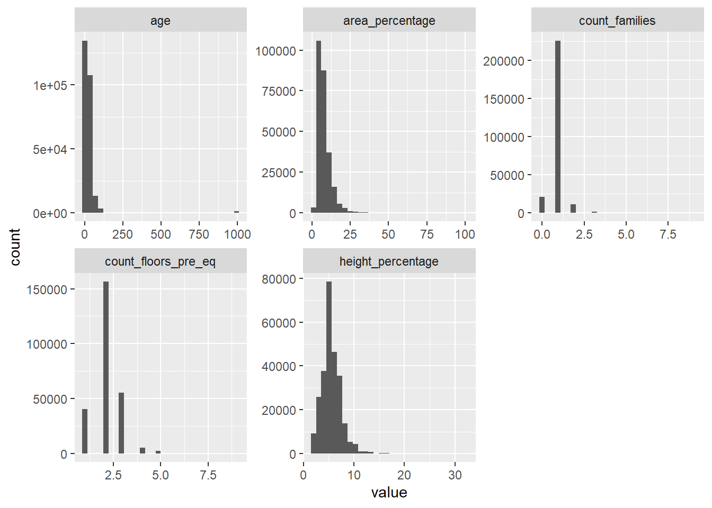
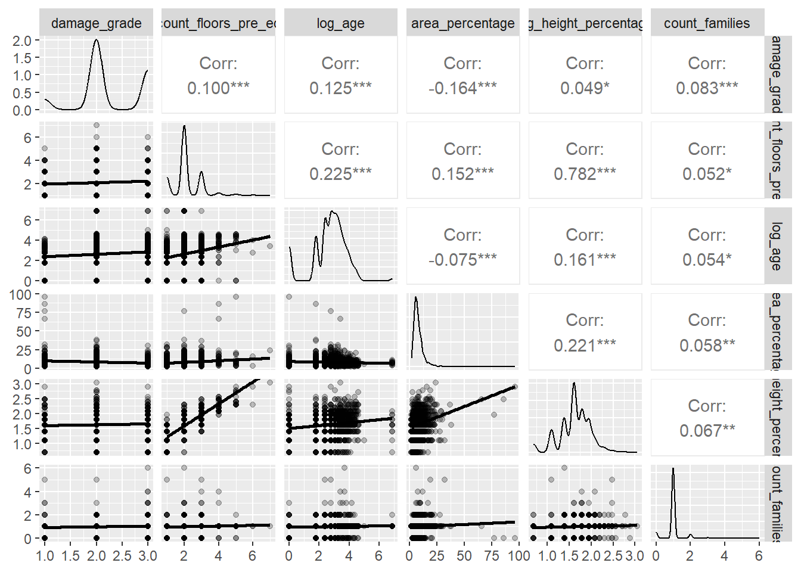
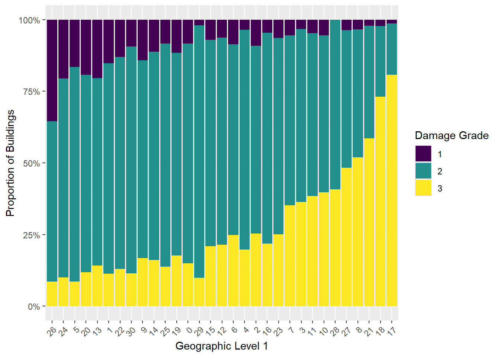
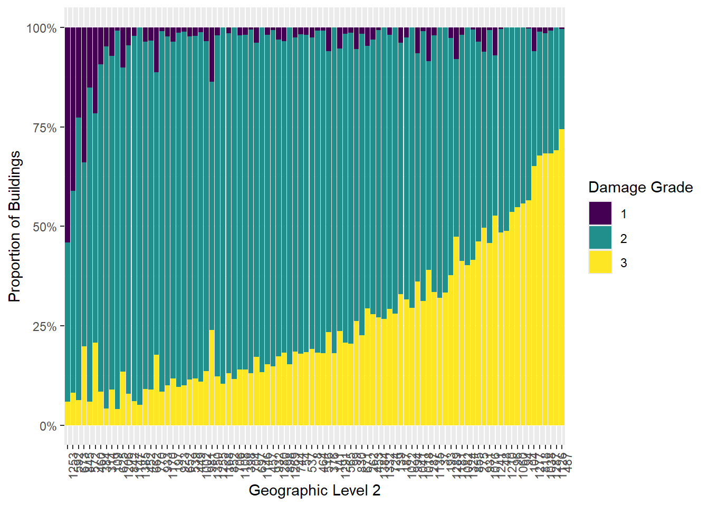
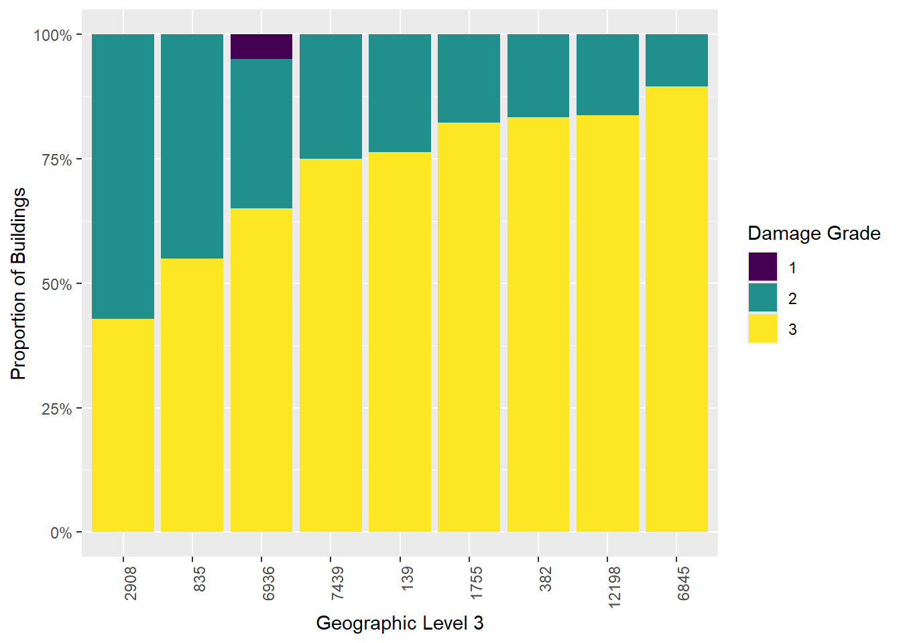
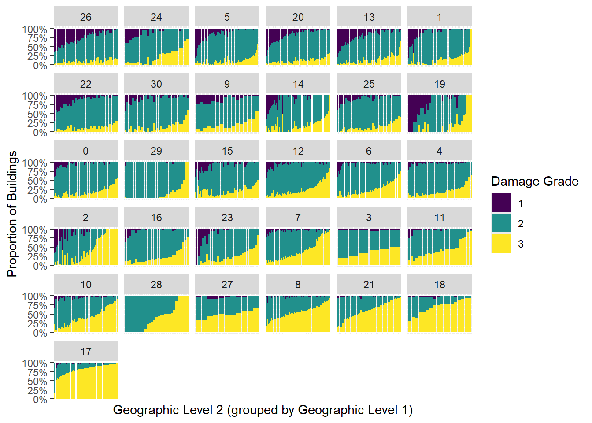
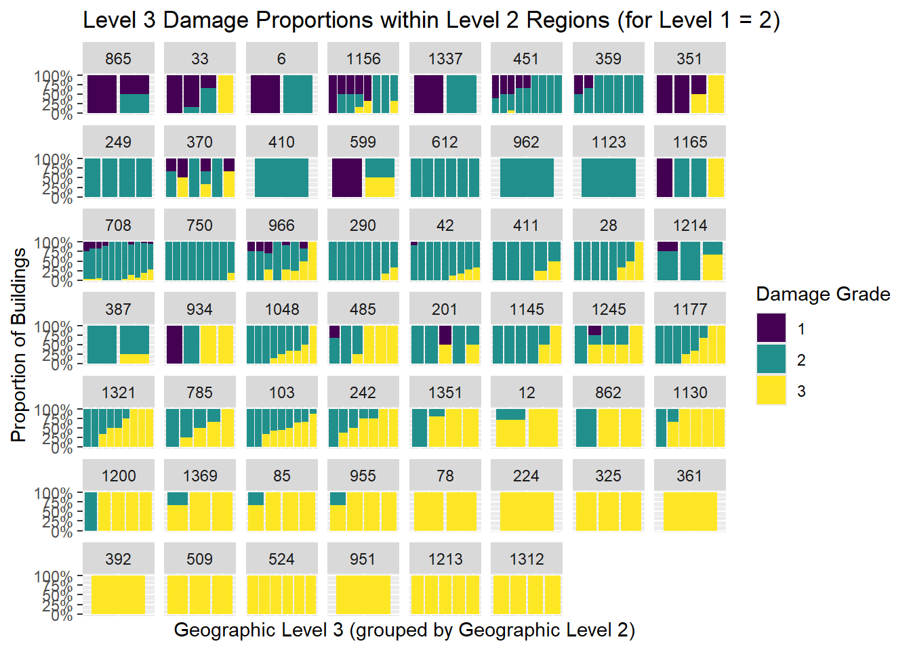
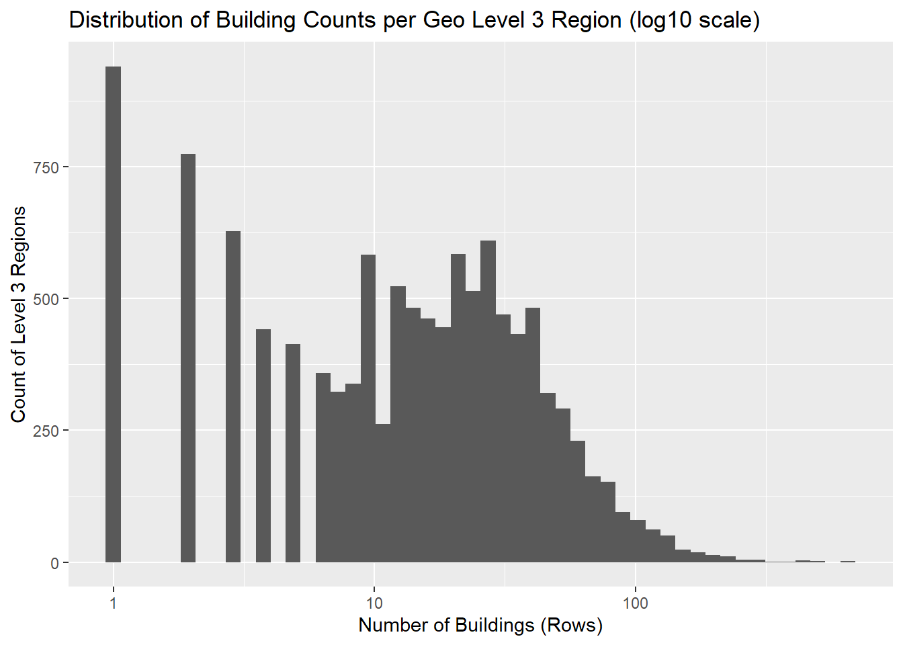
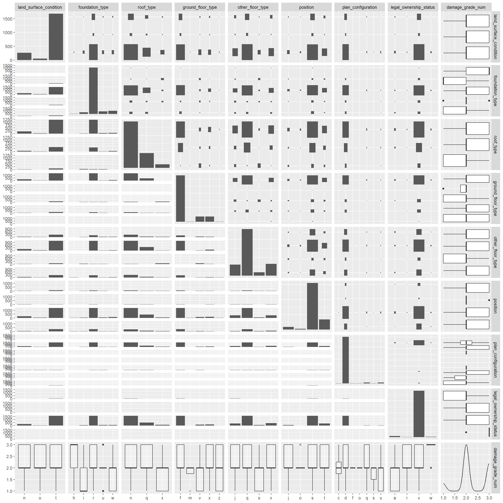
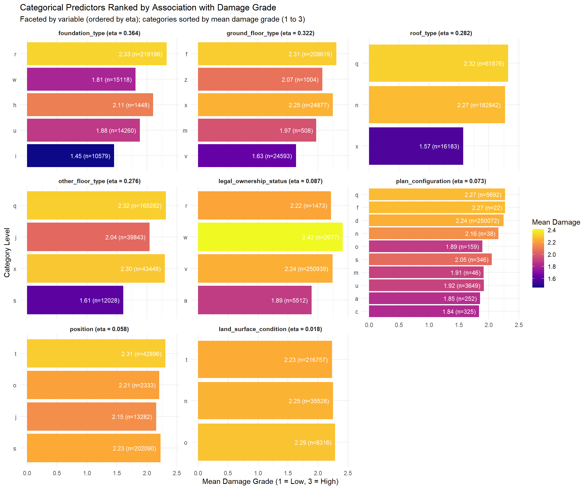

# Joining the two datasets by building_id
library(tidyverse)
library(tidymodels)
train_values <- read_csv("train_values.csv")
train_labels <- read_csv("train_labels.csv")
earthquake <- train_values |>
left_join(train_labels, by = "building_id")Pre-processing
# Check what the data looks like, check for missing values
glimpse(earthquake)Rows: 260,601
Columns: 40
$ building_id <dbl> 802906, 28830, 94947, 590882, 2…
$ geo_level_1_id <dbl> 6, 8, 21, 22, 11, 8, 9, 20, 0, …
$ geo_level_2_id <dbl> 487, 900, 363, 418, 131, 558, 4…
$ geo_level_3_id <dbl> 12198, 2812, 8973, 10694, 1488,…
$ count_floors_pre_eq <dbl> 2, 2, 2, 2, 3, 2, 2, 2, 2, 1, 2…
$ age <dbl> 30, 10, 10, 10, 30, 10, 25, 0, …
$ area_percentage <dbl> 6, 8, 5, 6, 8, 9, 3, 8, 8, 13, …
$ height_percentage <dbl> 5, 7, 5, 5, 9, 5, 4, 6, 6, 4, 6…
$ land_surface_condition <chr> "t", "o", "t", "t", "t", "t", "…
$ foundation_type <chr> "r", "r", "r", "r", "r", "r", "…
$ roof_type <chr> "n", "n", "n", "n", "n", "n", "…
$ ground_floor_type <chr> "f", "x", "f", "f", "f", "f", "…
$ other_floor_type <chr> "q", "q", "x", "x", "x", "q", "…
$ position <chr> "t", "s", "t", "s", "s", "s", "…
$ plan_configuration <chr> "d", "d", "d", "d", "d", "d", "…
$ has_superstructure_adobe_mud <dbl> 1, 0, 0, 0, 1, 0, 0, 0, 0, 0, 0…
$ has_superstructure_mud_mortar_stone <dbl> 1, 1, 1, 1, 0, 1, 1, 0, 1, 0, 1…
$ has_superstructure_stone_flag <dbl> 0, 0, 0, 0, 0, 0, 0, 0, 0, 0, 0…
$ has_superstructure_cement_mortar_stone <dbl> 0, 0, 0, 0, 0, 0, 0, 0, 0, 0, 0…
$ has_superstructure_mud_mortar_brick <dbl> 0, 0, 0, 0, 0, 0, 0, 0, 0, 0, 0…
$ has_superstructure_cement_mortar_brick <dbl> 0, 0, 0, 0, 0, 0, 0, 1, 0, 1, 0…
$ has_superstructure_timber <dbl> 0, 0, 0, 1, 0, 0, 0, 1, 1, 0, 1…
$ has_superstructure_bamboo <dbl> 0, 0, 0, 1, 0, 0, 0, 0, 0, 0, 0…
$ has_superstructure_rc_non_engineered <dbl> 0, 0, 0, 0, 0, 0, 0, 0, 0, 0, 0…
$ has_superstructure_rc_engineered <dbl> 0, 0, 0, 0, 0, 0, 0, 0, 0, 0, 0…
$ has_superstructure_other <dbl> 0, 0, 0, 0, 0, 0, 0, 0, 0, 0, 0…
$ legal_ownership_status <chr> "v", "v", "v", "v", "v", "v", "…
$ count_families <dbl> 1, 1, 1, 1, 1, 1, 1, 1, 1, 1, 1…
$ has_secondary_use <dbl> 0, 0, 0, 0, 0, 1, 0, 0, 0, 0, 0…
$ has_secondary_use_agriculture <dbl> 0, 0, 0, 0, 0, 1, 0, 0, 0, 0, 0…
$ has_secondary_use_hotel <dbl> 0, 0, 0, 0, 0, 0, 0, 0, 0, 0, 0…
$ has_secondary_use_rental <dbl> 0, 0, 0, 0, 0, 0, 0, 0, 0, 0, 0…
$ has_secondary_use_institution <dbl> 0, 0, 0, 0, 0, 0, 0, 0, 0, 0, 0…
$ has_secondary_use_school <dbl> 0, 0, 0, 0, 0, 0, 0, 0, 0, 0, 0…
$ has_secondary_use_industry <dbl> 0, 0, 0, 0, 0, 0, 0, 0, 0, 0, 0…
$ has_secondary_use_health_post <dbl> 0, 0, 0, 0, 0, 0, 0, 0, 0, 0, 0…
$ has_secondary_use_gov_office <dbl> 0, 0, 0, 0, 0, 0, 0, 0, 0, 0, 0…
$ has_secondary_use_use_police <dbl> 0, 0, 0, 0, 0, 0, 0, 0, 0, 0, 0…
$ has_secondary_use_other <dbl> 0, 0, 0, 0, 0, 0, 0, 0, 0, 0, 0…
$ damage_grade <dbl> 3, 2, 3, 2, 3, 2, 3, 1, 2, 1, 3…summary(earthquake) building_id geo_level_1_id geo_level_2_id geo_level_3_id
Min. : 4 Min. : 0.0 Min. : 0.0 Min. : 0
1st Qu.: 261190 1st Qu.: 7.0 1st Qu.: 350.0 1st Qu.: 3073
Median : 525757 Median :12.0 Median : 702.0 Median : 6270
Mean : 525675 Mean :13.9 Mean : 701.1 Mean : 6258
3rd Qu.: 789762 3rd Qu.:21.0 3rd Qu.:1050.0 3rd Qu.: 9412
Max. :1052934 Max. :30.0 Max. :1427.0 Max. :12567
count_floors_pre_eq age area_percentage height_percentage
Min. :1.00 Min. : 0.00 Min. : 1.000 Min. : 2.000
1st Qu.:2.00 1st Qu.: 10.00 1st Qu.: 5.000 1st Qu.: 4.000
Median :2.00 Median : 15.00 Median : 7.000 Median : 5.000
Mean :2.13 Mean : 26.54 Mean : 8.018 Mean : 5.434
3rd Qu.:2.00 3rd Qu.: 30.00 3rd Qu.: 9.000 3rd Qu.: 6.000
Max. :9.00 Max. :995.00 Max. :100.000 Max. :32.000
land_surface_condition foundation_type roof_type
Length:260601 Length:260601 Length:260601
Class :character Class :character Class :character
Mode :character Mode :character Mode :character
ground_floor_type other_floor_type position plan_configuration
Length:260601 Length:260601 Length:260601 Length:260601
Class :character Class :character Class :character Class :character
Mode :character Mode :character Mode :character Mode :character
has_superstructure_adobe_mud has_superstructure_mud_mortar_stone
Min. :0.00000 Min. :0.0000
1st Qu.:0.00000 1st Qu.:1.0000
Median :0.00000 Median :1.0000
Mean :0.08865 Mean :0.7619
3rd Qu.:0.00000 3rd Qu.:1.0000
Max. :1.00000 Max. :1.0000
has_superstructure_stone_flag has_superstructure_cement_mortar_stone
Min. :0.00000 Min. :0.00000
1st Qu.:0.00000 1st Qu.:0.00000
Median :0.00000 Median :0.00000
Mean :0.03433 Mean :0.01823
3rd Qu.:0.00000 3rd Qu.:0.00000
Max. :1.00000 Max. :1.00000
has_superstructure_mud_mortar_brick has_superstructure_cement_mortar_brick
Min. :0.00000 Min. :0.00000
1st Qu.:0.00000 1st Qu.:0.00000
Median :0.00000 Median :0.00000
Mean :0.06815 Mean :0.07527
3rd Qu.:0.00000 3rd Qu.:0.00000
Max. :1.00000 Max. :1.00000
has_superstructure_timber has_superstructure_bamboo
Min. :0.000 Min. :0.00000
1st Qu.:0.000 1st Qu.:0.00000
Median :0.000 Median :0.00000
Mean :0.255 Mean :0.08501
3rd Qu.:1.000 3rd Qu.:0.00000
Max. :1.000 Max. :1.00000
has_superstructure_rc_non_engineered has_superstructure_rc_engineered
Min. :0.00000 Min. :0.00000
1st Qu.:0.00000 1st Qu.:0.00000
Median :0.00000 Median :0.00000
Mean :0.04259 Mean :0.01586
3rd Qu.:0.00000 3rd Qu.:0.00000
Max. :1.00000 Max. :1.00000
has_superstructure_other legal_ownership_status count_families
Min. :0.00000 Length:260601 Min. :0.0000
1st Qu.:0.00000 Class :character 1st Qu.:1.0000
Median :0.00000 Mode :character Median :1.0000
Mean :0.01498 Mean :0.9839
3rd Qu.:0.00000 3rd Qu.:1.0000
Max. :1.00000 Max. :9.0000
has_secondary_use has_secondary_use_agriculture has_secondary_use_hotel
Min. :0.0000 Min. :0.00000 Min. :0.00000
1st Qu.:0.0000 1st Qu.:0.00000 1st Qu.:0.00000
Median :0.0000 Median :0.00000 Median :0.00000
Mean :0.1119 Mean :0.06438 Mean :0.03363
3rd Qu.:0.0000 3rd Qu.:0.00000 3rd Qu.:0.00000
Max. :1.0000 Max. :1.00000 Max. :1.00000
has_secondary_use_rental has_secondary_use_institution
Min. :0.000000 Min. :0.0000000
1st Qu.:0.000000 1st Qu.:0.0000000
Median :0.000000 Median :0.0000000
Mean :0.008101 Mean :0.0009401
3rd Qu.:0.000000 3rd Qu.:0.0000000
Max. :1.000000 Max. :1.0000000
has_secondary_use_school has_secondary_use_industry
Min. :0.0000000 Min. :0.000000
1st Qu.:0.0000000 1st Qu.:0.000000
Median :0.0000000 Median :0.000000
Mean :0.0003607 Mean :0.001071
3rd Qu.:0.0000000 3rd Qu.:0.000000
Max. :1.0000000 Max. :1.000000
has_secondary_use_health_post has_secondary_use_gov_office
Min. :0.000000 Min. :0.0000000
1st Qu.:0.000000 1st Qu.:0.0000000
Median :0.000000 Median :0.0000000
Mean :0.000188 Mean :0.0001458
3rd Qu.:0.000000 3rd Qu.:0.0000000
Max. :1.000000 Max. :1.0000000
has_secondary_use_use_police has_secondary_use_other damage_grade
Min. :0.000e+00 Min. :0.000000 Min. :1.000
1st Qu.:0.000e+00 1st Qu.:0.000000 1st Qu.:2.000
Median :0.000e+00 Median :0.000000 Median :2.000
Mean :8.826e-05 Mean :0.005119 Mean :2.238
3rd Qu.:0.000e+00 3rd Qu.:0.000000 3rd Qu.:3.000
Max. :1.000e+00 Max. :1.000000 Max. :3.000 colSums(is.na(earthquake)) building_id geo_level_1_id
0 0
geo_level_2_id geo_level_3_id
0 0
count_floors_pre_eq age
0 0
area_percentage height_percentage
0 0
land_surface_condition foundation_type
0 0
roof_type ground_floor_type
0 0
other_floor_type position
0 0
plan_configuration has_superstructure_adobe_mud
0 0
has_superstructure_mud_mortar_stone has_superstructure_stone_flag
0 0
has_superstructure_cement_mortar_stone has_superstructure_mud_mortar_brick
0 0
has_superstructure_cement_mortar_brick has_superstructure_timber
0 0
has_superstructure_bamboo has_superstructure_rc_non_engineered
0 0
has_superstructure_rc_engineered has_superstructure_other
0 0
legal_ownership_status count_families
0 0
has_secondary_use has_secondary_use_agriculture
0 0
has_secondary_use_hotel has_secondary_use_rental
0 0
has_secondary_use_institution has_secondary_use_school
0 0
has_secondary_use_industry has_secondary_use_health_post
0 0
has_secondary_use_gov_office has_secondary_use_use_police
0 0
has_secondary_use_other damage_grade
0 0 For this project, building_id has no predictive power, and keeping it would only introduce noise into the dataset, so I decided to drop it. Additionally, has_secondary_use is 1 whenever any detailed secondary-use flag is 1, making it redundant if we include all of the detailed indicators. That’s why I’m also dropping that one.
# Drop building_id column, as well as the redundant has_secondary_use column
earthquake <- earthquake |>
select(-building_id, -has_secondary_use)
# Convert categorical variables to factors
earthquake <- earthquake |>
mutate(
land_surface_condition = factor(land_surface_condition),
foundation_type = factor(foundation_type),
roof_type = factor(roof_type),
ground_floor_type = factor(ground_floor_type),
other_floor_type = factor(other_floor_type),
position = factor(position),
plan_configuration = factor(plan_configuration),
legal_ownership_status = factor(legal_ownership_status),
damage_grade = factor(damage_grade, levels = c(1, 2, 3), ordered = TRUE),
geo_level_1_id = factor(geo_level_1_id),
geo_level_2_id = factor(geo_level_2_id),
geo_level_3_id = factor(geo_level_3_id)
)Exploratory Data Analysis
Inspecting the numeric variables
library(ggplot2)
library(patchwork)Warning: package 'patchwork' was built under R version 4.5.3# Inspect distribution
earthquake |>
select(
count_floors_pre_eq,
age,
area_percentage,
height_percentage,
count_families
) |>
pivot_longer(
everything(),
names_to = "variable",
values_to = "value"
) |>
ggplot(aes(x = value)) +
geom_histogram(bins = 30) +
facet_wrap(~ variable, scales = "free")
Most distributions are slightly right-skewed, except for age which is extremely right-skewed, with a noticeable number of observations near the 1000 mark, which requires further investigation.
# Investigate age
earthquake |>
count(age) |>
arrange(desc(age)) |>
head(20)# A tibble: 20 × 2
age n
<dbl> <int>
1 995 1390
2 200 106
3 195 2
4 190 3
5 185 1
6 180 7
7 175 5
8 170 6
9 165 2
10 160 6
11 155 1
12 150 142
13 145 3
14 140 9
15 135 5
16 130 9
17 125 37
18 120 180
19 115 21
20 110 100There’s an exceptionally large number of observations at age == 995, which suggests it has a special meaning rather than being the actual age of a building.
library(GGally)Warning: package 'GGally' was built under R version 4.5.3# 1. Select numerical predictors with log transformations and damage_grade as numeric
numerical_vars <- earthquake |>
mutate(
damage_grade = as.numeric(as.character(damage_grade)),
log_age = log(age + 1),
log_height_percentage = log(height_percentage)
) |>
select(
damage_grade,
count_floors_pre_eq,
log_age,
area_percentage,
log_height_percentage,
count_families
)
# 2. Compute correlation matrix & find the most correlated numerical predictor with damage_grade
correlations_table <- cor(numerical_vars, use = "pairwise.complete.obs")
correlations <- correlations_table["damage_grade", ]
correlations <- correlations[names(correlations) != "damage_grade"]
# Predictor with strongest correlation:
most_correlated <- names(correlations)[which.max(abs(correlations))]
most_correlated[1] "log_age"# 3. Pairwise plot with damage_grade and numerical predictors
# (Sampling rows is recommended if dataset is large, e.g. slice_sample(n = 2000))
GGally::ggpairs(
numerical_vars |> slice_sample(n = min(2000, nrow(numerical_vars))),
lower = list(
continuous = GGally::wrap(
"smooth", method = "lm", se = FALSE, alpha = 0.25
)
)
)
Dealing with geo_level_id
While the categorical variable geo_level_1_id only has 31 unique values, geo_level_2_id has over 1400, and geo_level_3_id has over 12,000. My assumption is that geo_level_1_id represents the the largest region, and that observations with the same geo_level_1_id would have different geo_level_2_id, implying a nested nested structure of geographic hierarchy. To test this assumption, I’ll check whether there are any observation with the same geo_level_1_id, but different geo_level_2_id, and the same for 2 and 3, as well as 1 and 3
# check whether there are any observation with the same geo_level_1_id, but different geo_level_2_id
earthquake |>
distinct(geo_level_1_id, geo_level_2_id) |>
count(geo_level_2_id) |>
filter(n > 1)# A tibble: 0 × 2
# ℹ 2 variables: geo_level_2_id <fct>, n <int># check whether there are any observation with the same geo_level_2_id, but different geo_level_3_id
earthquake |>
distinct(geo_level_2_id, geo_level_3_id) |>
count(geo_level_3_id) |>
filter(n > 1)# A tibble: 0 × 2
# ℹ 2 variables: geo_level_3_id <fct>, n <int># check whether there are any observation with the same geo_level_1_id, but different geo_level_3_id
earthquake |>
distinct(geo_level_1_id, geo_level_3_id) |>
count(geo_level_3_id) |>
filter(n > 1)# A tibble: 0 × 2
# ℹ 2 variables: geo_level_3_id <fct>, n <int>So my assumption was correct, and the geographic ids are nested, now I want to test whether there are substantial variance in levels of damage across geographic regions. We start from large to small (level_1_ids, and then different level_2_ids within the same level_1_ids, and then different level_3_ids within the same level_2_ids)
# Investigate whether damage grade differs substantially by geographic region
geo_order <- earthquake |>
mutate(damage_num = as.numeric(as.character(damage_grade))) |>
group_by(geo_level_1_id) |>
summarise(
mean_damage = mean(damage_num)
) |>
arrange(mean_damage)
geo1_damage <- earthquake |>
mutate(
geo_level_1_id = factor(
geo_level_1_id,
levels = geo_order$geo_level_1_id
)
) |>
count(geo_level_1_id, damage_grade) |>
group_by(geo_level_1_id) |>
mutate(prop = n / sum(n))
ggplot(
geo1_damage,
aes(x = geo_level_1_id, y = prop, fill = damage_grade)
) +
geom_col() +
scale_y_continuous(labels = scales::percent) +
labs(
x = "Geographic Level 1",
y = "Proportion of Buildings",
fill = "Damage Grade"
) +
theme(
axis.text.x = element_text(
angle = 45,
hjust = 1
)
)
Based on the visualization, there IS substantial damage grade variation across geographic regions, which justify keeping the first level of geographic ids.
For level 2, I’ll examine all the level-2 regions within the same level-1 region id 6:
geo_order <- earthquake |>
mutate(damage_num = as.numeric(as.character(damage_grade))) |>
group_by(geo_level_2_id) |>
summarise(
mean_damage = mean(damage_num)
) |>
arrange(mean_damage)
geo2_damage <- earthquake |>
mutate(
geo_level_2_id = factor(
geo_level_2_id,
levels = geo_order$geo_level_2_id
)
)|>
count(
geo_level_1_id,
geo_level_2_id,
damage_grade
) |>
group_by(
geo_level_1_id,
geo_level_2_id
) |>
mutate(
prop = n / sum(n)
) |>
ungroup()
geo2_damage |>
filter(geo_level_1_id == 6) |>
ggplot(
aes(
x = geo_level_2_id,
y = prop,
fill = damage_grade
)
) +
geom_col() +
scale_y_continuous(
labels = scales::percent
) +
labs(
x = "Geographic Level 2",
y = "Proportion of Buildings",
fill = "Damage Grade"
) +
theme(
axis.text.x = element_text(
angle = 90,
hjust = 1
)
)
Based on the visualization, there is substantial variation in levels of damage within the same level-1 region as well, which justifies keeping the second level of geographical id.
For level 3, I’ll examine all the level-3 regions within the same level-2 region id 487:
geo_order <- earthquake |>
mutate(damage_num = as.numeric(as.character(damage_grade))) |>
group_by(geo_level_3_id) |>
summarise(
mean_damage = mean(damage_num)
) |>
arrange(mean_damage)
geo3_damage <- earthquake |>
mutate(
geo_level_3_id = factor(
geo_level_3_id,
levels = geo_order$geo_level_3_id
)
)|>
count(
geo_level_2_id,
geo_level_3_id,
damage_grade
) |>
group_by(
geo_level_2_id,
geo_level_3_id
) |>
mutate(
prop = n / sum(n)
) |>
ungroup()
geo3_damage |>
filter(geo_level_2_id == 487) |>
ggplot(
aes(
x = geo_level_3_id,
y = prop,
fill = damage_grade
)
) +
geom_col() +
scale_y_continuous(
labels = scales::percent
) +
labs(
x = "Geographic Level 3",
y = "Proportion of Buildings",
fill = "Damage Grade"
) +
theme(
axis.text.x = element_text(
angle = 90,
hjust = 1
)
)
There is variation among the third level of geographic id as well, but seemingly not as pronounced as the first two levels. However, I don’t know if every second-level region looks like this, it got me thinking: On average, how many third-level region is in one second-level region? And how many second-level region is in one first-level region? Because here’s the rationale: the more sub-regions are contained within one region, the more likely the effect of an earthquake will be varied across said sub-regions.
That’s why I’ll count how many level-2 regions is inside each level-1 region, and how many level-3 region is inside each level-2 region
# counting level-2 regions
geo1_counts <- earthquake |>
group_by(geo_level_1_id) |>
summarise(
n_geo_level_2 = n_distinct(geo_level_2_id),
.groups = "drop"
) |>
arrange(desc(n_geo_level_2))
geo1_counts# A tibble: 31 × 2
geo_level_1_id n_geo_level_2
<fct> <int>
1 6 90
2 17 79
3 14 76
4 12 73
5 7 67
6 5 62
7 8 62
8 0 57
9 13 56
10 15 56
# ℹ 21 more rowssummary(geo1_counts$n_geo_level_2) Min. 1st Qu. Median Mean 3rd Qu. Max.
6.00 30.50 47.00 45.61 56.50 90.00 # counting level-3 regions
geo2_counts <- earthquake |>
group_by(
geo_level_1_id,
geo_level_2_id
) |>
summarise(
n_geo_level_3 = n_distinct(geo_level_3_id),
.groups = "drop"
) |>
arrange(desc(n_geo_level_3))
geo2_counts# A tibble: 1,414 × 3
geo_level_1_id geo_level_2_id n_geo_level_3
<fct> <fct> <int>
1 27 181 35
2 11 883 30
3 9 26 27
4 30 73 26
5 27 1394 25
6 27 533 21
7 9 546 19
8 11 765 19
9 27 390 19
10 1 1169 18
# ℹ 1,404 more rowssummary(geo2_counts$n_geo_level_3) Min. 1st Qu. Median Mean 3rd Qu. Max.
1.0 8.0 9.0 8.2 9.0 35.0 So on average, each level-1 region contains around 46 level-2 regions, while each level-2 regions only contain 8 level-3 regions. For this reason, I think there is definitely an argument to roll the level-3 geographical data into fewer categories, or just outright dropping it.
# Order geo_level_1_id by overall mean damage
geo1_order <- earthquake |>
mutate(damage_num = as.numeric(as.character(damage_grade))) |>
group_by(geo_level_1_id) |>
summarise(mean_damage_geo1 = mean(damage_num), .groups = "drop") |>
arrange(mean_damage_geo1)
# Order geo_level_2_id hierarchically:
# First by geo_level_1_id mean damage, then by geo_level_2_id mean damage within each level 1
geo2_order <- earthquake |>
mutate(damage_num = as.numeric(as.character(damage_grade))) |>
group_by(geo_level_1_id, geo_level_2_id) |>
summarise(mean_damage_geo2 = mean(damage_num), .groups = "drop") |>
left_join(geo1_order, by = "geo_level_1_id") |>
arrange(mean_damage_geo1, mean_damage_geo2)
# Compute proportions of damage grade per geo_level_2_id
geo2_damage_all <- earthquake |>
mutate(
geo_level_1_id = factor(geo_level_1_id, levels = geo1_order$geo_level_1_id),
geo_level_2_id = factor(geo_level_2_id, levels = geo2_order$geo_level_2_id)
) |>
count(geo_level_1_id, geo_level_2_id, damage_grade) |>
group_by(geo_level_1_id, geo_level_2_id) |>
mutate(prop = n / sum(n)) |>
ungroup()
# Plot faceted across level 1 regions (preserving level 1 order)
ggplot(
geo2_damage_all,
aes(x = geo_level_2_id, y = prop, fill = damage_grade)
) +
geom_col(position = "stack") +
facet_wrap(~ geo_level_1_id, scales = "free_x") +
scale_y_continuous(labels = scales::percent) +
labs(
x = "Geographic Level 2 (grouped by Geographic Level 1)",
y = "Proportion of Buildings",
fill = "Damage Grade"
) +
theme(
axis.text.x = element_blank(), # hides tick labels for readability due to 1400+ IDs
axis.ticks.x = element_blank()
)
# Level 3 regions within Level 2 groups, filtered for Level 1 group 2
# We can use another grou, this one just seemed to follow the overall trend of the data
# Filter data for geo_level_1_id == 2
earthquake_geo1_2 <- earthquake |>
filter(geo_level_1_id == 2)
# Order geo_level_2_id within geo_level_1_id == 2 by mean damage
geo2_order_g2 <- earthquake_geo1_2 |>
mutate(damage_num = as.numeric(as.character(damage_grade))) |>
group_by(geo_level_2_id) |>
summarise(mean_damage_geo2 = mean(damage_num), .groups = "drop") |>
arrange(mean_damage_geo2)
# Order geo_level_3_id hierarchically:
# First by geo_level_2_id mean damage, then by geo_level_3_id mean damage within each level 2
geo3_order_g2 <- earthquake_geo1_2 |>
mutate(damage_num = as.numeric(as.character(damage_grade))) |>
group_by(geo_level_2_id, geo_level_3_id) |>
summarise(mean_damage_geo3 = mean(damage_num), .groups = "drop") |>
left_join(geo2_order_g2, by = "geo_level_2_id") |>
arrange(mean_damage_geo2, mean_damage_geo3)
# Compute proportions of damage grade per geo_level_3_id
geo3_damage_g2 <- earthquake_geo1_2 |>
mutate(
geo_level_2_id = factor(geo_level_2_id, levels = geo2_order_g2$geo_level_2_id),
geo_level_3_id = factor(geo_level_3_id, levels = geo3_order_g2$geo_level_3_id)
) |>
count(geo_level_2_id, geo_level_3_id, damage_grade) |>
group_by(geo_level_2_id, geo_level_3_id) |>
mutate(prop = n / sum(n)) |>
ungroup()
# Plot faceted across level 2 regions within level 1 group 2
ggplot(
geo3_damage_g2,
aes(x = geo_level_3_id, y = prop, fill = damage_grade)
) +
geom_col(position = "stack") +
facet_wrap(~ geo_level_2_id, scales = "free_x") +
scale_y_continuous(labels = scales::percent) +
labs(
title = "Level 3 Damage Proportions within Level 2 Regions (for Level 1 = 2)",
x = "Geographic Level 3 (grouped by Geographic Level 2)",
y = "Proportion of Buildings",
fill = "Damage Grade"
) +
theme(
axis.text.x = element_blank(),
axis.ticks.x = element_blank()
)
# Summary statistics on building counts (rows) per geo_level_3_id
geo3_row_counts <- earthquake |>
count(geo_level_3_id, name = "n_buildings")
summary(geo3_row_counts$n_buildings) Min. 1st Qu. Median Mean 3rd Qu. Max.
1.00 5.00 14.00 22.48 30.00 651.00 # Distribution plot of building counts per level 3 region
ggplot(geo3_row_counts, aes(x = n_buildings)) +
geom_histogram(bins = 50) +
scale_x_log10() +
labs(
title = "Distribution of Building Counts per Geo Level 3 Region (log10 scale)",
x = "Number of Buildings (Rows)",
y = "Count of Level 3 Regions"
)
Inspecting the remaining categorical variables
# Select categorical variables (excluding high-cardinality geo_level IDs) and numeric damage_grade
cat_vars <- c(
"land_surface_condition",
"foundation_type",
"roof_type",
"ground_floor_type",
"other_floor_type",
"position",
"plan_configuration",
"legal_ownership_status"
)
cat_data <- earthquake |>
mutate(damage_grade_num = as.numeric(as.character(damage_grade))) |>
select(all_of(cat_vars), damage_grade_num)
# GGally ggpairs with boxplots for categorical vs numeric damage_grade
GGally::ggpairs(
cat_data |> slice_sample(n = min(2000, nrow(cat_data))),
columns = c(cat_vars, "damage_grade_num"),
lower = list(
combo = GGally::wrap("box_no_facet", alpha = 0.25)
)
)
# Compute correlation ratio (eta = sqrt(R^2)) for each categorical variable
cat_correlations <- purrr::map_dfr(cat_vars, function(var) {
model <- lm(as.formula(paste("damage_grade_num ~", var)), data = cat_data)
r_squared <- summary(model)$r.squared
tibble::tibble(
variable = var,
eta = sqrt(r_squared),
r_squared = r_squared
)
}) |>
arrange(desc(eta))
# Compute category-level summary stats (mean damage & frequency)
category_level_stats <- purrr::map_dfr(cat_vars, function(var) {
earthquake |>
mutate(damage_num = as.numeric(as.character(damage_grade))) |>
group_by(category_level = as.character(.data[[var]])) |>
summarise(
variable = var,
n = n(),
mean_damage = mean(damage_num),
prop_grade_3 = mean(damage_num == 3),
.groups = "drop"
)
}) |>
arrange(desc(mean_damage))
# Join overall eta to category-level stats
plot_cat_data <- category_level_stats |>
left_join(cat_correlations, by = "variable") |>
mutate(
facet_label = paste0(variable, " (eta = ", round(eta, 3), ")"),
facet_label = reorder(facet_label, -eta)
)
# Plot categories ranked by mean damage with eta annotated
ggplot(plot_cat_data, aes(x = reorder(category_level, mean_damage), y = mean_damage, fill = mean_damage)) +
geom_col() +
geom_text(
aes(label = sprintf("%.2f (n=%d)", mean_damage, n)),
hjust = 1.1,
color = "white",
size = 3
) +
coord_flip() +
facet_wrap(~ facet_label, scales = "free_y") +
scale_fill_viridis_c(option = "plasma", name = "Mean Damage") +
labs(
title = "Categorical Predictors Ranked by Association with Damage Grade",
subtitle = "Faceted by variable (ordered by eta); categories sorted by mean damage grade (1 to 3)",
x = "Category Level",
y = "Mean Damage Grade (1 = Low, 3 = High)"
) +
theme_minimal() +
theme(strip.text = element_text(face = "bold"))
Train-test split
Because Grade 2 is the most common damage level and grade 1 the least common, I’ll split the data 80/20 into the training and test set, stratified on damage_grade
set.seed(98)
earthquake_split <- initial_split(earthquake, prop = 0.8, strata = damage_grade)
train <- training(earthquake_split)
test <- testing(earthquake_split)